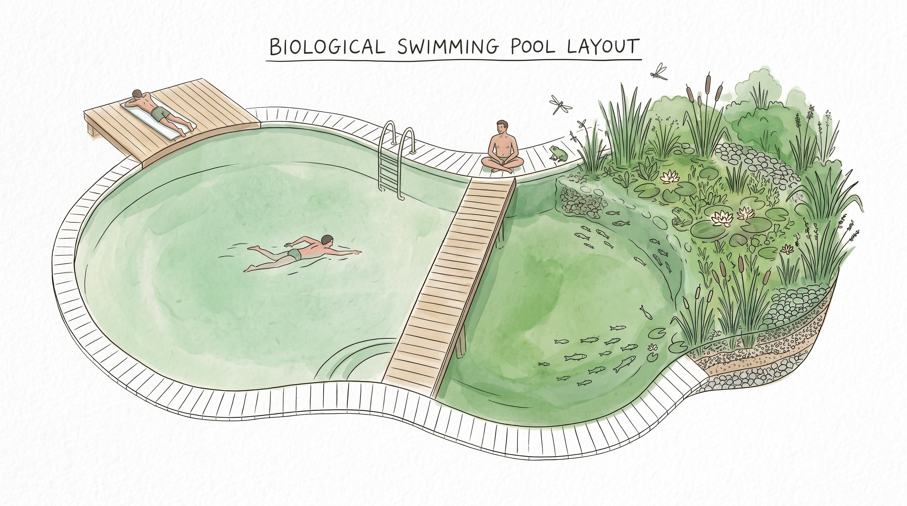
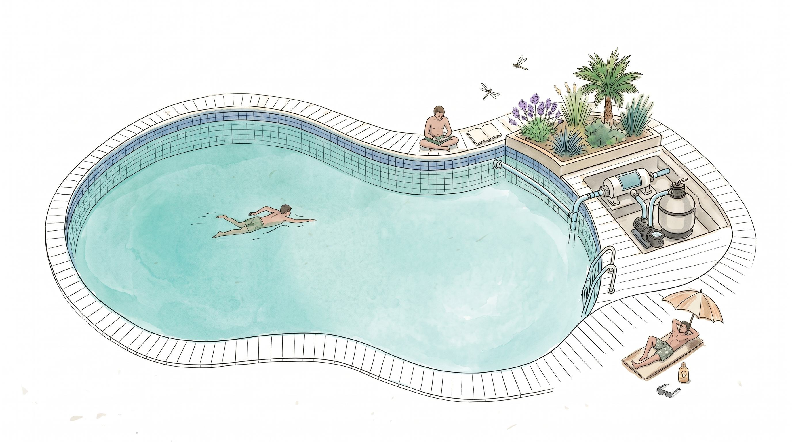

About Honest Pools
At Honest Pools, we believe pool care should be simple, transparent, and tailored to what your water actually needs.
We specialize in salt-water pool systems and bio-organic pool care, helping homeowners and businesses move beyond traditional high-chlorine maintenance.
Convert. Maintain. Swim Cleaner.

What We Do
From converting existing pools to providing reliable ongoing maintenance, we offer solutions designed around your pool's condition, equipment, and water quality.
- Pool Conversion: Transform traditional pools into salt-water or bio-organic systems.
- Salt Pool Care: Keep your pool clean, balanced, and properly maintained.
- Bio Pool Care: Manage water quality through bio-based treatments and consistent monitoring.

Ready to Swim Cleaner?
Looking to convert your pool or improve the way it's maintained?
Let's find the right solution for your pool.